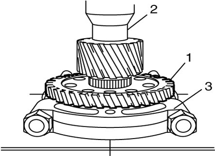
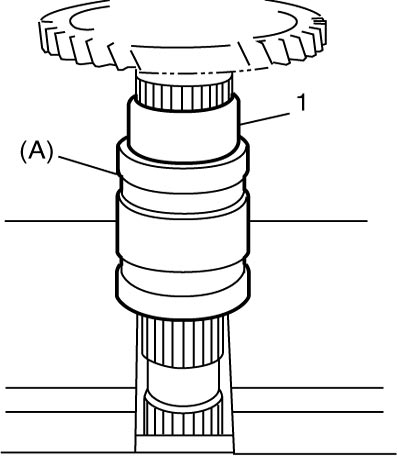
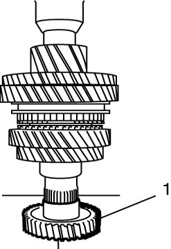

5B
| Countershaft Disassembly and Reassembly |
Using an inappropriate hydraulic press or bearing puller could cause personal injury.
Use the hydraulic press and bearing puller which are capable of safely bearing a load of at least 5 tons (11,000 lbs).
NOTICE:
Supporting the gear on the concave side of the puller can cause damage to the gear.
Support the gear on the flat side of the puller.
Disassembly
1)Using special tool, remove circlip (1).

NOTE:
For smooth removal of circlip, it is recommended to correct tool tips to be flat.
 "Expand image")
2)Drive out left bearing (2) using puller (3) and hydraulic press.
 "Expand image")
| 1. | Countershaft |
3)Drive out 6th gear (1) using puller (2) and hydraulic press.
 "Expand image")
4)Apply puller (3) to 4th gear (2) and drive out 5th gear (1) with 4th gear using hydraulic press.

 "Expand image")
5)Apply puller (3) to 2nd gear (2) and drive out 3rd gear (1) with 2nd gear using hydraulic press.

 "Expand image")
6)Apply puller (3) to 1st gear (2) and drive out low speed synchronizer sleeve & hub assembly (1) with 1st gear using hydraulic press.
 "Expand image")
7)Take out 1st gear needle bearing from shaft.
8)Apply puller (3) to reverse gear (2) and drive out 1st gear spacer (1) with reverse gear using hydraulic press.
 "Expand image")
Reassembly
1)Clean all components thoroughly, check them for any abnormality and replace defective parts with new ones, if necessary.
2)Check clearance “a” between synchronizer inner ring (2) and gear (1) as well as clearance “b” between synchronizer outer ring (4) and gear (1) respectively.
If measured value “a” or “b”, whichever is smaller, is out of specification, replace synchronizer inner ring (2), synchronizer center cone (3), synchronizer outer ring (4) and/or gear. Also check gear teeth.
If measured value “a” or “b”, whichever is smaller, is out of specification, replace synchronizer inner ring (2), synchronizer center cone (3), synchronizer outer ring (4) and/or gear. Also check gear teeth.
Clearance “a” between synchronizer inner ring and gear, or clearance “b” between synchronizer outer ring and gear, whichever is smaller (1st and 2nd)
Standard: 0.7 – 1.6 mm (0.028 – 0.063 in.)
Service limit: 0.3 mm (0.012 in.)
 "Expand image")
| 5. | Thickness gauge |
3)To ensure lubrication of countershaft (1), blow air into oil holes (2) and check that they are free from any obstruction.
 "Expand image")
4)Fit low speed synchronizer sleeve (4) to hub (3), and insert 3 keys (2) and springs (1) as shown in figure.
NOTE:
•No specific direction is assigned to each key but it is assigned as sleeve & hub assembly.
•Sizes of low speed synchronizer keys and springs are larger than sizes of high speed ones.
•Sizes of low speed synchronizer keys and springs are larger than sizes of high speed ones.
Synchronizer key installation position
 "Expand image")
| [A]: | 2nd gear side | B: | Key way |
5)Drive in reverse gear (1) to countershaft (2) using puller (3) and hydraulic press.

 "Expand image")
6)Drive in 1st gear spacer (1) using special tool and hydraulic press.

 "Expand image")
7)Install 1st gear needle bearing (4), apply oil to it, and then install 1st gear and 1st gear synchronizer ring (2).
8)Drive in low speed sleeve & hub assembly (1) using special tool and hydraulic press.
NOTE:
•Support shaft with special tool as shown in figure so that retainer of bearing cone is free from compression.
•Check that synchronizer ring key slots are aligned with keys (5) while press-fitting sleeve & hub assembly.
•Check free rotation of 1st gear (3) after press-fitting sleeve & hub assembly.
•Check that synchronizer ring key slots are aligned with keys (5) while press-fitting sleeve & hub assembly.
•Check free rotation of 1st gear (3) after press-fitting sleeve & hub assembly.
 "Expand image")
| [A]: | 1st gear side | B: | Short flange |
| A: | Key slots |
9)Drive in 2nd gear spacer (1) using special tool and hydraulic press.

 "Expand image")
10)Drive in 3rd gear (2) and 2nd gear synchronizer ring (1) using special tool and hydraulic press.
NOTE:
It is recommended to press-fit spacer and 3rd gear first, and then 4th gear later separately so that countershaft will not be compressed excessively.
 "Expand image")
11)Drive in 4th gear (1) using puller and hydraulic press.

 "Expand image")
12)Drive in 5th gear using the same procedure as in Step 10).

 "Expand image")
14)Install shim, left bearing (1), washer and used circlip using special tool and hydraulic press.
NOTE:
For protection of bearing cone, always support shaft with special tool as shown in figure.
 "Expand image")
15)Select shim (1) that will make thrust clearance “b” of bearing 0.1 mm (0.004 in.) or less and install it.
 "Expand image")
Available shim thickness
| Clearance “a” | Applicable shim |
|---|---|
| 1.275 – 1.345 mm (0.0502 – 0.0530 in.) |
1.26 mm (0.050 in.) |
| 1.345 – 1.415 mm (0.0530 – 0.0557 in.) |
1.33 mm (0.052 in.) |
| 1.415 – 1.485 mm (0.0557 – 0.0585 in.) |
1.40 mm (0.055 in.) |
| 1.485 – 1.555 mm (0.0585 – 0.0612 in.) |
1.47 mm (0.058 in.) |
| 1.555 – 1.625 mm (0.0612 – 0.0640 in.) |
1.54 mm (0.061 in.) |
| 1.625 – 1.695 mm (0.0640 – 0.0667 in.) |
1.61 mm (0.063 in.) |
16)Select circlip (1) that will make thrust clearance “b” of washer 0.06 mm (0.0023 in.) or less and install it.
 "Expand image")
Available circlip thickness
| Clearance “a” | Applicable circlip |
|---|---|
| 2.100 – 2.130 mm (0.0827 – 0.0838 in.) |
2.10 mm (0.0827 in.) |
| 2.130 – 2.160 mm (0.0838 – 0.0850 in.) |
2.13 mm (0.0838 in.) |
| 2.160 – 2.190 mm (0.0850 – 0.0862 in.) |
2.16 mm (0.0850 in.) |
| 2.190 – 2.220 mm (0.0862 – 0.0874 in.) |
2.19 mm (0.0862 in.) |
| 2.220 – 2.250 mm (0.0874 – 0.0885 in.) |
2.22 mm (0.0874 in.) |
| 2.250 – 2.280 mm (0.0885 – 0.0897 in.) |
2.25 mm (0.0885 in.) |
| 2.280 – 2.310 mm (0.0897 – 0.0909 in.) |
2.28 mm (0.0897 in.) |